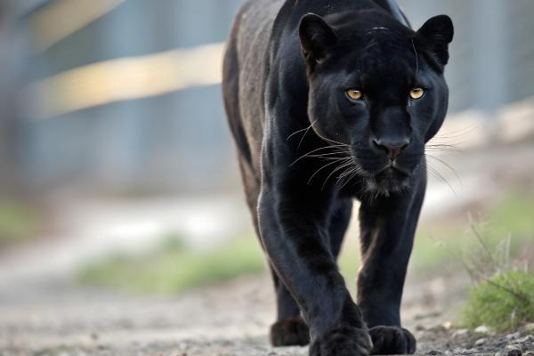

La pantera negra es un felino de gran tamaño que puede llegar a medir los dos metros de largo. Este animal es muy particular, ya que, en sí, se trata de un jaguar (Panthera onca) o leopardo (Panthera pardus), solo que, a diferencia de esas dos especies, este presenta pelaje negro debido a un problema con su melanina. A este animal le gustan los climas tropicales, las montañas y escalar en los árboles. Un curioso animal carnívoro, conocido como el fantasma de la noche, que acecha a sus presas con su increíble capacidad de ver en la oscuridad.
Si quieres conocer más sobre la pantera negra, entonces te invitamos a seguir leyendo este artículo de BIOenciclopedia donde encontrarás información sobre su alimentación, reproducción, dónde vive y mucha más información.
La pantera negra vive en regiones selváticas en el sudeste de Asia, en la India y en el centro y sur de América. Así mismo, ellos también pueden adaptarse a climas cálidos como en Malasia o Java. Las zonas más comunes en las cuales habita la pantera negra son en lo alto de las montañas, en pantanos, ríos, bosques con mucha vegetación, y en lugares con climas tropicales y lluvias abundantes. Este animal se adapta con facilidad a diversos medios, como los parajes montañosos que encontramos en la sabana o las regiones casi desérticas.
El inicio del periodo reproductivo de la pantera negra es a los dos años, mientras que los machos, generalmente, demoran un año más. El periodo de celo es el único momento en que las panteras se relacionan. Durante este tiempo, los constantes rugidos de la hembra hacia el macho, el cual corresponde con fuertes bramidos, provocan que estos se junten para aparearse.
La gestación de la pantera negra tiene una duración que varía de 92 a 113 días. Una vez se cumpla el tiempo, pueden nacer hasta cuatro cachorros, cada uno con un peso entre 600 y 900 gramos. Los ojos de las crías estarán completamente abiertos a las dos semanas, y permanecerán con su madre hasta los dos años. Luego, cada nueva pantera negra joven comenzara la búsqueda de su propio territorio para vivir.
